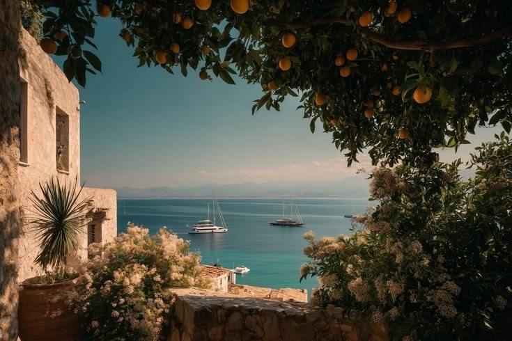
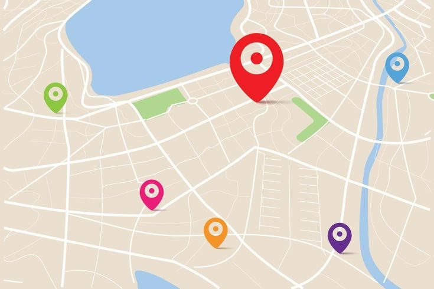

San Antero
Playas paradisíacas y mar maravilloso
Ubicación
Golfo de Morrosquillo, 2 h de Montería
Clima
Cálido, 27 a 32 °C
Mejor agenda
Diciembre a abril
Días sugeridos
2 a 3 días





Sobre San Antero
Ubicado en el golfo de Morrosquillo, San Antero combina playas tranquilas de aguas cálidas con los manglares de la bahía de Cispatá, uno de los ecosistemas mejor conservados del Caribe. Es famoso por el Festival Nacional del Burro, que se celebra cada Semana Santa, y por su gastronomía basada en pescado fresco y coco.
